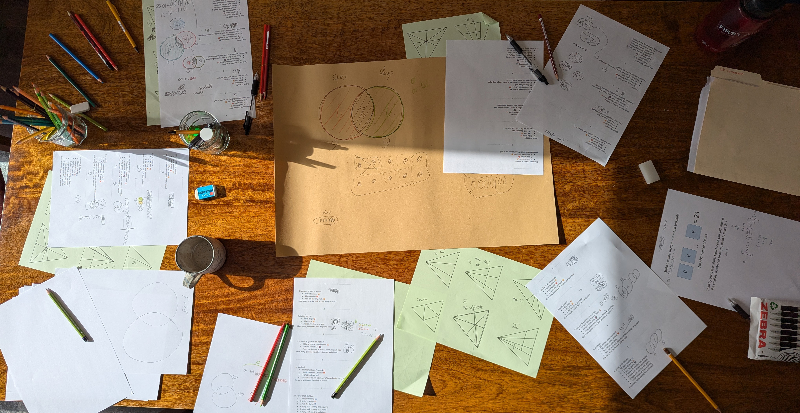

Maths Circle in London

This website shows what we do at Maths Circle (Club)
- Age: Year 4–6 (8–11 years old)
- Where: London, currently in King Alfred School (we are not affiliated, working as external provider)
- Format: once/week, 1.5 hours
- Class size: 8 kids (extending to 10 from the summer term)
-
Main purposes
- Grow interest in maths and in challenges that require reasoning and problem-solving.
- Teach kids to solve maths challenges of their age group (e.g. First/Primary Mathematics Challenge).
- Intersection with the school curriculum is intentionally low, but some fluency in arithmetic should build up as a result of attending the club.